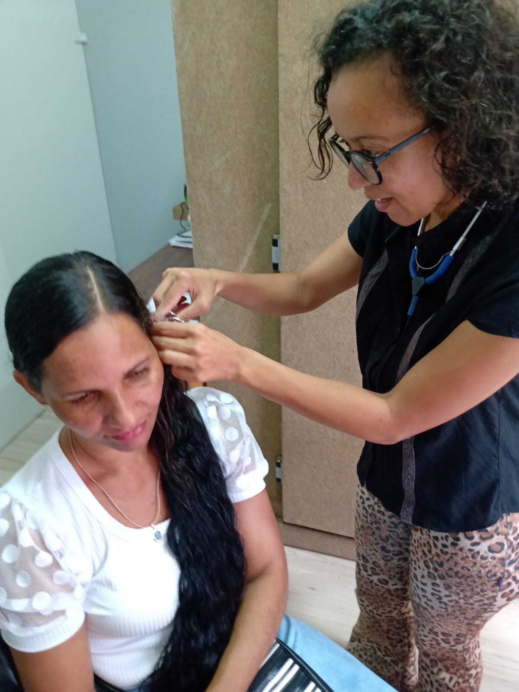

Serviços prestados
Cobrando a acessibilidade negada em show
Recebendo a premiação em terceiro lugar no projeto Avança Libras
Levando acessibilidade para o surdo no seu local de trabalho
Buscando parceria da secretaria de saúde para promover o curso de Libras

Instruindo surda no seu primeiro dia de trabalho

Acompanhando surda em teste de aparelho auditivo